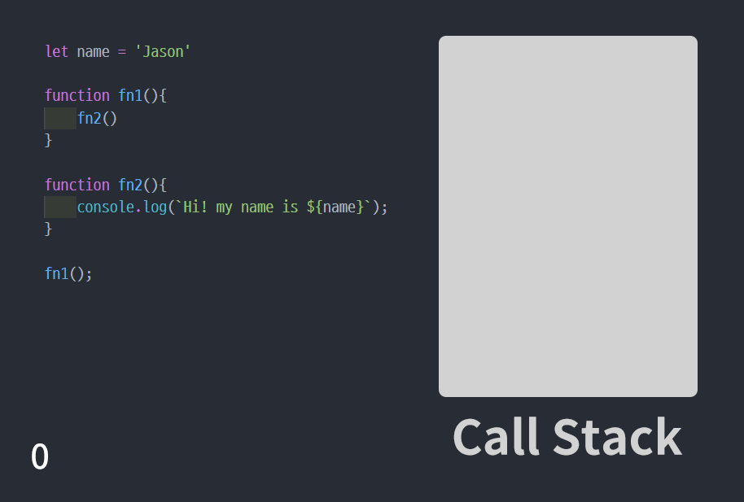
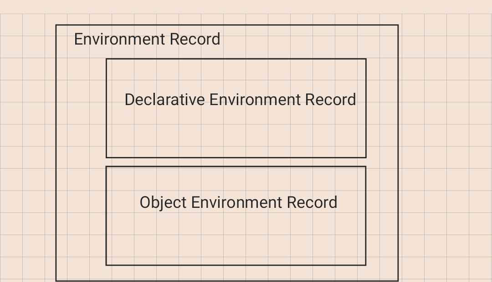
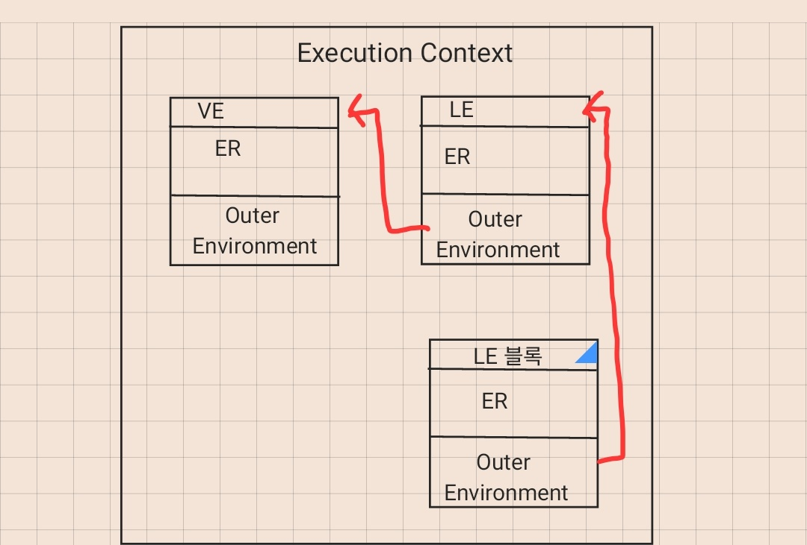

Execution Context(실행 컨텍스트)란?

ECMAScript 스펙에 따르면 실행 가능한 코드를 형상화하고 구분하는 추상적인 개념
다시 말해 코드에 선언된 변수와 함수, 스코프 등의 정보들을 모아 놓은 객체 또는 환경이라고 생각하면 된다. 실행 컨텍스트는 동일한 환경(스코프)에 있는 코드를 실행할 때 필요한 환경 정보들을 모아 하나의 컨텍스트로 구성하고, 이를 Call Stack(JS엔진의 콜스택) 안에 쌓아 올려 push하여 실행하거나 종료가 되면 pop을 한다.
실행 컨텍스트 종류
1. Global Execution Context(전역)
코드를 실행하면 단 한 개만 정의되는 전역 Context이다. global object를 생성하며 this값에 global object를 참조합니다. 또한 Call Stack에 가장 먼저 추가되며 앱이 종료될 때 삭제된다.
2. Functional Execution Context(함수)
함수가 실행될 때 마다 정의되는 Context이다. 전역 실행 컨텍스트가 한 번만 정의되는 것과 달리, 함수 실행 컨텍스트는 매 실행 시마다 정의되며 함수 실행이 종료(return)되면 Call Stack에서 제거된다.
3. Eval Context(eval)
eval함수로 실행한 코드의 Context이며 MDN에서는 보안상 취약점이 있어 비권장하기 때문에 다루지 않겠습니다.
실행 컨텍스트 구성

Execution Context는 Lexical Environment과 Variable Environment의 두 가지로 구성되어 있습니다. 각 Environment들은 생성 시 같은 속성의 카테고리를 가지고 있습니다.
Environment(환경)

Environment Record(환경 레코드)
렉시컬 중첩 구조 기반으로 변수, 함수 식별자와 값을 관리하는 것
- Declarative Environment Record(선언적 환경 레코드) ex) var, const, let, class, import, module, function등 스코프 내에서 선언된 식별자들의 바인딩을 관리한다.
- Object Environment Record(객체 환경 레코드) ex) object내의 프로퍼티 이름에 문자열 타입의 식별자 이름들을 바인딩한다.
- Global Environment Record (전역 환경 레코드) 어떤 코드든 평가되기 전 객체, 전역환경, 전역 스코프에서 로드되는 realm에서 처리되는 가장 바깥 스코프를 나타내는데 사용된다. 이론상 하나의 레코드지만
선언적 환경 레코드와객체 환경레코드로 구성 된다.

Reference to the outer environment(외부 참조 환경)
lexical scope(정적 스코프)를 기준으로 상위 scope의 Lexical Environment를 참조한다. 각 참조는 단방향 Linked List의 형태로 구현되어있다. Global Execution Context는 외부 환경 참조 값으로는 null갖는다. 다른 Context는 상위 Scope에 해당하는 Lexical Environment를 외부 환경 참조 값으로 갖는다. 이 연결고리는 변수 탐색 시 사용된다.
Lexical Environment와 Variable Environment
L.E(Lexical Environment)는 V.E(Variable Environment)에 상속되는 관계여서 모두 Lexical Environment라고 말할 수 있다. 하지만 둘을 구분 짓는 이유는 scope의 범위 때문이다.
ES6로 변경되면서 let, const가 도입이 되면서 block scope 개념이 생기게 되었으며 기존 var와 함수에 관한 function scope와 구분 짓도록 생기게 됐다.
그래서 Lexical Environment는 let과 const와 같이 block scope 단위로 하며 Variable Environment는 var와 같이 선언된 변수나 함수의 function scope 단위로 한다.
참조
https://dkje.github.io/2020/08/30/ExecutionContext/
https://poiemaweb.com/js-execution-context
https://velog.io/@jeongs/ARTICLE-실행-컨텍스트
https://roseline.oopy.io/dev/javascript-back-to-the-basic/environment-record